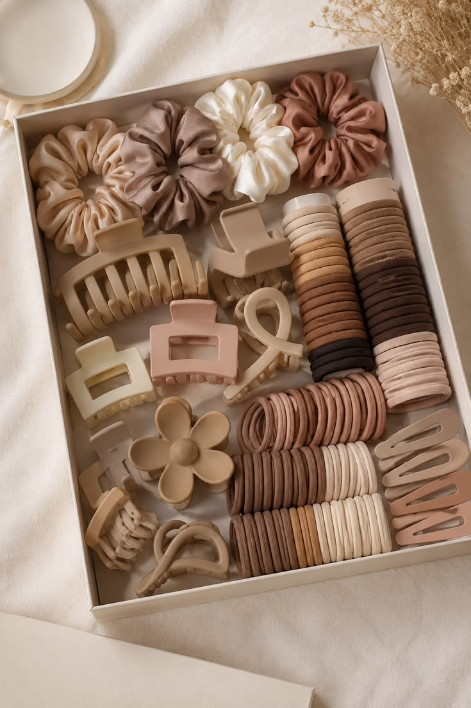

About Hair Haven Accessories
Hair Haven Accessories is an online shop created to offer stylish, affordable, and practical hair accessories for different hairstyles and occasions.
The shop was created to make it easier for customers to discover simple and fashionable accessories that can add personality and style to their everyday looks.
About Me
I am Darryl Naval, a Web Development student who enjoys creating simple and creative websites. I created Hair Haven Accessories as a school project and as an opportunity to combine my interest in web development with a shop concept focused on hair accessories.
I started this shop because I believe that small accessories can make a big difference in someone's overall style. Hair ties, claw clips, snap clips, and scrunchies can be simple but useful additions to everyday outfits and special occasions.
